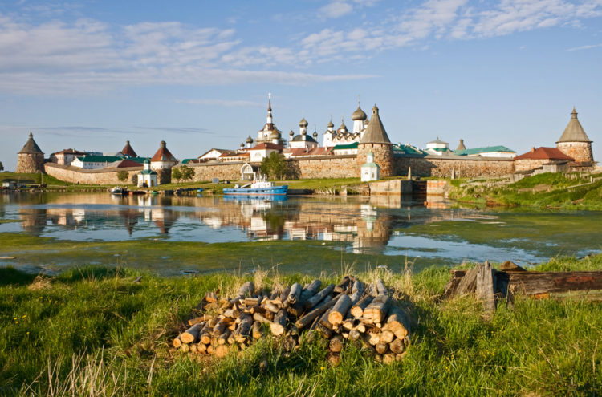

11.Соловецкий архипелаг (Архангельск)

Часто иностранцы путешественники, интересующиеся тем, что посетить в России, принимают решение съездить на Соловецкий архипелаг, находящийся в Белом море и состоящий из 6 больших и малых островов. Здесь находится знаменитый средневековый монастырь Соловки. Посещая острова, Вы можете познакомиться с легендарным монастырем и крепостью, узнать историю печально известного сталинского лагеря ГУЛАГ. Вам покажут многочисленные скиты в разных частях острова, монастырский сухой док, каменные лабиринты доисторических времен. У Соловецкого острова нет рек, но есть сотни озер. Взяв лодку, вы сможете отправиться на ней по сложной системе каналов острова, соединяющей его самые большие озера. Архипелаг является местом обитания белых китов (белух). Стены и 8 шестиметровых башен Соловецкой крепости были построены из гигантских диких валунов. Бытовые сооружения, церкви и соборы находятся внутри, под защитой крепости. Секирная гора, узнаваемое место на Соловках, находится на северо-западе архипелага. На вершине этого высокого холма в XIX веке монахи построили церковь Вознесения, служившую еще и маяком. В эпоху ГУЛАГа там находилась одна из самых жестоких каторжных камер. В память о людях, казненных там, позднее был воздвигнут крест.